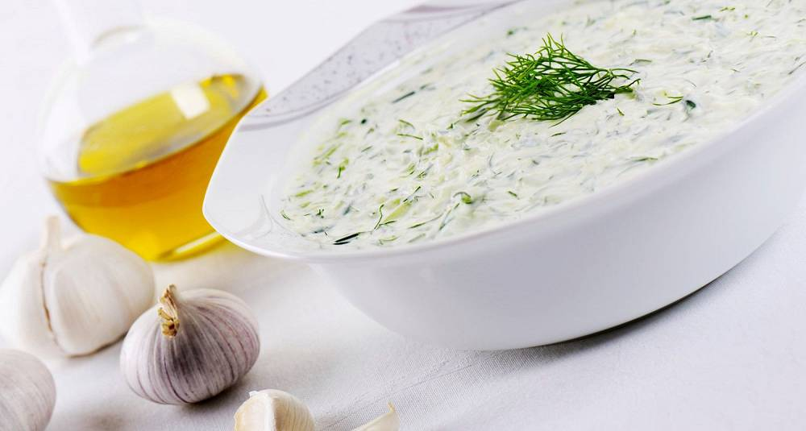

Tzatziki

Need an unexciting dip for your extracurricular bible study tonight?
Ingredients
- 1,5 cucumber
- 0,5 tbs salt
- 2 garlic wedges
- 3 dl greek yogurt
- 0,5 tbs freshly ground pepper
Cook it:
- Roughly grate the cucumber and sprinkle with salt. Leave for 5-10 mins, then squeeze the water out of it
- Mix with finely minced garlic and yogurt, season to taste with salt and pepper
There you go! A dip that will offend noone whilst also satisfying noone. Nobody wins!
Go home